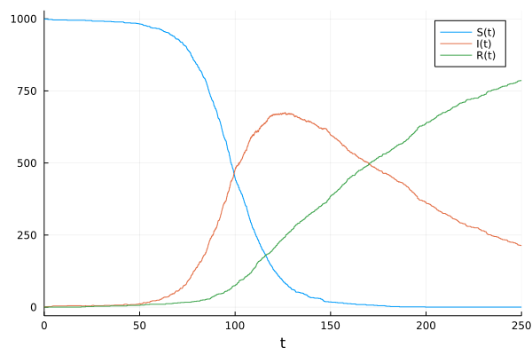
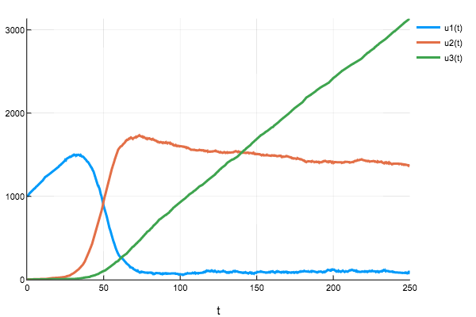
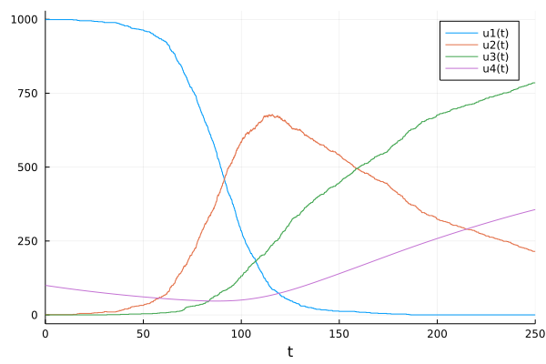
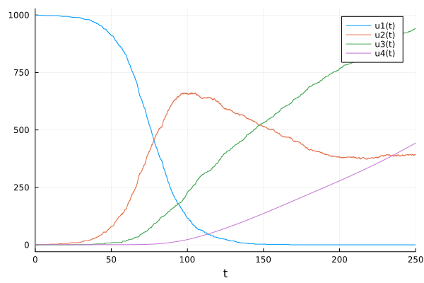
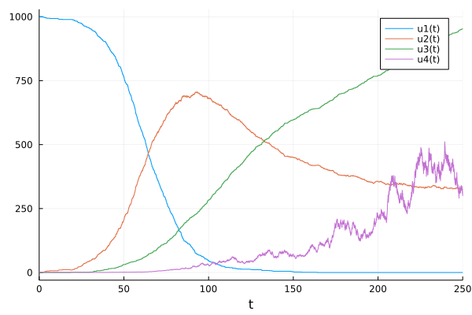

Continuous-Time Jump Processes and Gillespie Methods
In this tutorial we will describe how to define and simulate continuous-time jump processes, also known in biological fields as stochastic chemical kinetics (i.e. Gillespie) models.
This tutorial assumes you have read the Ordinary Differential Equations tutorial in DifferentialEquations.jl.
The discrete stochastic simulations we consider are a form of jump equation with a "trivial" (non-existent) differential equation. We will first demonstrate how to build these types of models using the biological modeling functionality of Catalyst.jl, then describe how to build them directly and more generally using DiffEqJump.jl jump types, and finally show how to couple discrete stochastic simulations to differential equation models.
Illustrative Model: SIR disease dynamics
To illustrate the jump process solvers, we will build an SIR model which matches the tutorial from Gillespie.jl. SIR stands for susceptible, infected, and recovered, and is a model of disease spread. When a susceptible person comes in contact with an infected person, the disease has a chance of infecting the susceptible person. This "chance" is determined by the number of susceptible persons and the number of infected persons, since in larger populations there is a greater chance that two people come into contact. Every infected person will in turn have a rate at which they recover. In our model we'll assume there are no births or deaths, and a recovered individual is protected from reinfection.
We'll begin by giving the mathematical equations for the jump processes of the number of susceptible ($S(t)$), number of infected ($I(t)$), and number of recovered ($R(t)$). In the next section we give a more intuitive and biological description of the model for users that are less familiar with jump processes. Let $Y_i(t)$, $i = 1,2$, denote independent unit Poisson processes. Our basic mathematical model for the evolution of $(S(t),I(t),R(t))$, written using Kurtz's time-change representation, is then
\[\begin{aligned} S(t) &= S(0) - Y_1\left( \int_0^t \beta S(s^{-}) I(s^{-}) \, ds\right) \\ I(t) &= I(0) + Y_1\left( \int_0^t \beta S(s^{-}) I(s^{-}) \, ds\right) - Y_2 \left( \int_0^t \nu I(s^-) \, ds \right) \\ R(t) &= R(0) + Y_2 \left( \int_0^t \nu I(s^-) \, ds \right) \end{aligned}\]
Notice, our model involves two jumps with rate functions, also known as intensities or propensities, given by $\beta S(t) I(t)$ and $\nu I(t)$ respectively. These model the infection of susceptible individuals and recovery of infected individuals.
Defining the SIR Model using Reactions via Catalyst
For those less-familiar with the time-change representation, we now give a more intuitive explanation of the model, and then demonstrate how it can be written as a serious of chemical reactions in Catalyst.jl and seamlessly converted into a form that can be used with the DiffEqJump.jl solvers. Users interested in how to directly define jumps using the lower-level DiffEqJump interface can skip to Building and Simulating the Jump Process using the DiffEqJump Low-level Interface.
The SIR model described above involves two basic chemical reactions,
\[\begin{aligned} S + I &\overset{\beta}{\to} 2 I \\ I &\overset{\nu}{\to} R, \end{aligned}\]
where $\beta$ and $\nu$ are the rate constants of the reactions (with units of probability per time). In a jump process (stochastic chemical kinetics) model, we keep track of the non-negative integer number of each species at each time (i.e. $(S(t), I(t), R(t))$ above). Each reaction has an associated rate function (i.e. intensity or propensity) giving the probability per time it can occur when the system is in state $(S(t),I(t),R(t))$:
\[\begin{matrix} \text{Reaction} & \text{Rate Functions} \\ \hline S + I \overset{\beta}{\to} 2 I & \beta S(t) I(t) \\ I \overset{\nu}{\to} R & \nu I(t). \end{matrix}\]
$\beta$ is determined by factors like the type of the disease. It can be interpreted as the probability per time one pair of susceptible and infected people encounter each other, with the susceptible person becoming sick. The overall rate (i.e. probability per time) that some susceptible person gets sick is then given by the rate constant multiplied by the number of possible pairs of susceptible and infected people. This formulation is known as the law of mass action. Similarly, we have that each individual infected person is assumed to recover with probability per time $\nu$, so that the probability per time some infected person becomes recovered is $\nu$ times the number of infected people, i.e. $\nu I(t)$.
Rate functions give the probability per time for each of the two types of jumps to occur, and hence determine when the state of our system changes. To fully specify our model we also need to specify how the state changes when a jump occurs, giving what are called affect functions in DiffEqJump. For example, when the $S + I \to 2 I$ reaction occurs and some susceptible person becomes infected, the subsequent (instantaneous) state change is that
\[\begin{aligned} S &\to S - 1 & I &\to I + 1. \end{aligned}\]
Likewise, when the $I \to R$ reaction occurs so that some infected person becomes recovered the state change is
\[\begin{aligned} I &\to I - 1 & R \to R + 1. \end{aligned}\]
Using Catalyst.jl we can input our full reaction network in a form that can be easily used with DiffEqJump's solvers:
# ]add Catalyst
using Catalyst
sir_model = @reaction_network begin
β, S + I --> 2I
ν, I --> R
end β νNotice that the order the variables are introduced in the model is S, then I, then R, and thus this is the canonical ordering of the variables.
Building and Simulating the Jump Process from Catalyst Models
First, we have to define some kind of differential equation that we can "solve" to simulate the jump process. Since we want integer, discrete changes in the numbers of the different types of people, we will build a DiscreteProblem. We do this by giving the constructor u0, the initial condition, and tspan, the timespan. Here, we will start with 999 susceptible people, 1 infected person, and 0 recovered people, and solve the problem from t=0.0 to t=250.0. We use the parameters β = 0.1/1000 and ν = 0.01. Thus we build the problem via:
p = (0.1/1000,0.01)
u₀ = [999,1,0]
tspan = (0.0,250.0)
prob = DiscreteProblem(sir_model, u₀, tspan, p)Notice, the initial populations are integers since we want the exact number of people in the different states.
The Catalyst reaction network can be converted into various DifferentialEquations.jl problem types, including JumpProblems, ODEProblems, or SDEProblems. To turn it into a jump problem representing the SIR jump process model, we load DiffEqJump and simply do:
using DiffEqJump
jump_prob = JumpProblem(sir_model, prob, Direct())Here Direct() indicates that we will determine the random times and types of reactions using Gillespie's Direct stochastic simulation algorithm (SSA). See Constant Rate Jump Aggregators for other supported SSAs.
We now have a problem that can be evolved in time using the DiffEqJump solvers. Since our model is a pure jump process (no continuously-varying components), we will use SSAStepper() to handle time-stepping the Direct method from jump to jump:
sol = solve(jump_prob, SSAStepper())This solve command takes the standard commands of the common interface, and the solution object acts just like any other differential equation solution. Thus there exists a plot recipe, which we can plot with:
using Plots; plot(sol)
Building and Simulating the Jump Process using the DiffEqJump Low-level Interface
We now show how to directly use DiffEqJump's low-level interface to construct and solve our jump process model for $(S(t),I(t),R(t))$. Each individual jump that can occur is represented through specifying two pieces of information; a rate function (i.e. intensity or propensity) for the jump and an affect function for the jump. The former gives the probability per time a particular jump can occur given the current state of the system, and hence determines the time at which jumps can happen. The later specifies the instantaneous change in the state of the system when the jump occurs.
In our SIR model we have two possible jumps that can occur (one for susceptibles becoming infected and one for infected becoming recovered), with the corresponding (mathematical) rates and affects given by
\[\begin{matrix} \text{Rates} & \text{Affects}\\ \hline \beta S(t) I(t) & S \to S - 1,\, I \to I + 1 \\ \nu I(t) & I \to I - 1, \, R \to R + 1. \end{matrix}\]
DiffEqJump offers three different ways to represent jumps: MassActionJump, ConstantRateJump, and VariableRateJump. Choosing which to use is a trade off between the desired generality of the rate and affect functions vs. the computational performance of the resulting simulated system. In general
| Jump Type | Performance | Generality |
|---|---|---|
MassActionJump | Fastest | Restrictive rates/affects |
ConstantRateJump | Somewhat Slower | Much more general |
VariableRateJump | Slowest | Completely general |
It is recommended to try to encode jumps using the most performant option that supports the desired generality of the underlying rate and affect functions. Below we describe the different jump types, and show how the SIR model can be formulated using first ConstantRateJumps and then MassActionJumps (VariableRateJumps are considered later).
Defining the Jumps Directly: ConstantRateJump
The constructor for a ConstantRateJump is:
jump = ConstantRateJump(rate, affect!)where rate is a function rate(u,p,t) and affect! is a function of the integrator affect!(integrator) (for details on the integrator, see the integrator interface docs). Here u corresponds to the current state of the system; for our SIR model u[1]=S(t), u[2]=I(t) and u[3]=R(t). p corresponds to the parameters of the model, just as used for passing parameters to derivative functions in ODE solvers. Thus, to define the two possible jumps for our model we take (with β=.1/1000.0 and ν=.01).
using DiffEqJump
β = 0.1 / 1000.0; ν = .01;
p = (β,ν)
rate1(u,p,t) = p[1]*u[1]*u[2] # β*S*I
function affect1!(integrator)
integrator.u[1] -= 1 # S -> S - 1
integrator.u[2] += 1 # I -> I + 1
end
jump = ConstantRateJump(rate1,affect1!)
rate2(u,p,t) = p[2]*u[2] # ν*I
function affect2!(integrator)
integrator.u[2] -= 1 # I -> I - 1
integrator.u[3] += 1 # R -> R + 1
end
jump2 = ConstantRateJump(rate2,affect2!)We will start with 999 susceptible people, 1 infected person, and 0 recovered people, and solve the problem from t=0.0 to t=250.0 so that
u₀ = [999,1,0]
tspan = (0.0,250.0)Notice, the initial populations are integers since we want the exact number of people in the different states.
Since we want integer, discrete changes in the numbers of the different types of people, we will build a DiscreteProblem.
prob = DiscreteProblem(u₀, tspan, p)We can then use JumpProblem from DiffEqJump to augment the discrete problem with jumps and select the stochastic simulation algorithm (SSA) to use in sampling the jump processes. To create a JumpProblem we would simply do:
jump_prob = JumpProblem(prob, Direct(), jump, jump2)Here Direct() indicates that we will determine the random times and types of jumps that occur using Gillespie's Direct stochastic simulation algorithm (SSA). See Constant Rate Jump Aggregators for other supported SSAs.
We now have a problem that can be evolved in time using the DiffEqJump solvers. Since our model is a pure jump process (no continuously-varying components), we will use SSAStepper() to handle time-stepping the Direct method from jump to jump:
sol = solve(jump_prob, SSAStepper())This solve command takes the standard commands of the common interface, and the solution object acts just like any other differential equation solution. Thus there exists a plot recipe, which we can plot with:
using Plots; plot(sol)Note, in systems with more than a few jumps (more than ~10), it can be advantageous to use more sophisticated SSAs than Direct. For such systems it is recommended to use SortingDirect, RSSA or RSSACR, see the list of DiffEqJump SSAs at Constant Rate Jump Aggregators.
Caution about Constant Rate Jumps
ConstantRateJumps are quite general, but they do have one restriction. They assume that the rate functions are constant at all times between two consecutive jumps of the system. i.e. any species/states or parameters that the rate function depends on must not change between the times at which two consecutive jumps occur. Such conditions are violated if one has a time dependent parameter like $\beta(t)$ or if some of the solution components, say u[2], may also evolve through a coupled ODE or SDE (see below for examples). For problems where the rate function may change between consecutive jumps, VariableRateJumps must be used.
Thus in the examples above,
rate1(u,p,t) = p[1]*u[1]*u[2]
rate2(u,p,t) = p[2]*u[2]both must be constant other than changes due to some other ConstantRateJump or MassActionJump (the same restriction applies to MassActionJumps). Since these rates only change when u[1] or u[2] is changed, and u[1] and u[2] only change when one of the jumps occur, this setup is valid. However, a rate of t*p[1]*u[1]*u[2] would not be valid because the rate would change during the interval, as would p[2]*u[1]*u[4] when u[4] is the solution to a continuous problem such as an ODE or SDE. Thus one must be careful to follow this rule when choosing rates.
If your problem must have the rates depend on a continuously changing quantity, you need to use the VariableRateJump.
SSAStepper
Any common interface algorithm can be used to perform the time-stepping since it is implemented over the callback interface. This allows for hybrid systems that mix ODEs, SDEs and jumps. In many cases we may have a pure jump system that only involves ConstantRateJumps and/or MassActionJumps (see below). When that's the case, a substantial performance benefit may be gained by using SSAStepper(). Note, SSAStepper is a more limited time-stepper which only supports discrete events, and does not allow simultaneous coupled ODEs or SDEs. It is, however, very efficient for pure jump problems.
Reducing Memory Use: Controlling Saving Behavior
Note that jumps act via the callback interface which defaults to saving at each event. The reason is because this is required in order to accurately resolve every discontinuity exactly (and this is what allows for perfectly vertical lines in plots!). However, in many cases when using jump problems you may wish to decrease the saving pressure given by large numbers of jumps. To do this, you set save_positions in the JumpProblem. Just like for other callbacks, this is a tuple (bool1,bool2) which sets whether to save before or after a jump. If we do not want to save at every jump, we would thus pass:
jump_prob = JumpProblem(prob, Direct(), jump, jump2, save_positions=(false,false))Now the saving controls associated with the integrator are the only ones to note. For example, we can use saveat=0.5 to save at an evenly spaced grid:
sol = solve(jump_prob, SSAStepper(), saveat=0.5)Defining the Jumps Directly: MassActionJump
For jumps that can be represented as mass action reactions, a further specialization of the jump type is possible that offers improved computational performance; MassActionJump. Suppose the system has $N$ chemical species $\{S_1,\dots,S_N\}$. A general mass action reaction has the form
\[R_1 S_1 + R_2 S_2 + \dots + R_N S_N \overset{k}{\rightarrow} P_1 S_1 + P_2 S_2 + \dots + P_N S_N\]
where the non-negative integers $(R_1,\dots,R_N)$ denote the reactant stoichiometry of the reaction, and the non-negative integers $(P_1,\dots,P_N)$ the product stoichiometry. The net stoichiometry is the net change in each chemical species from the reaction occurring one time, given by $(P_1-R_1,\dots,P_N-R_N)$.
As an example, consider again the SIR model defined in the @reaction_network above. The species are then (S,I,R). The first reaction has rate β, reactant stoichiometry (1,1,0), product stoichiometry (0,2,0), and net stoichiometry (-1,1,0). The second reaction has rate ν, reactant stoichiometry (0,1,0), product stoichiometry (0,0,1), and net stoichiometry (0,-1,1).
We can manually encode this system as a mass action jump by specifying the indexes of the rate constants in p, the reactant stoichiometry, and the net stoichiometry as follows:
rateidxs = [1, 2] # i.e. [β,ν]
reactant_stoich =
[
[1 => 1, 2 => 1], # 1*S and 1*I
[2 => 1] # 1*I
]
net_stoich =
[
[1 => -1, 2 => 1], # -1*S and 1*I
[2 => -1, 3 => 1] # -1*I and 1*R
]
mass_act_jump = MassActionJump(reactant_stoich, net_stoich; param_idxs=rateidxs)Notice, one typically should define one MassActionJump that encodes each possible jump that can be represented via a mass action reaction. This is in contrast to ConstantRateJumps or VariableRateJumps where separate instances are created for each distinct jump type.
Just like for ConstantRateJumps, to then simulate the system we create a JumpProblem and call solve:
jump_prob = JumpProblem(prob, Direct(), mass_act_jump)
sol = solve(jump_prob, SSAStepper())For more details about MassActionJumps see Defining a Mass Action Jump.
Note, for chemical reaction systems, Catalyst.jl automatically groups reactions into their optimal jump representation.
Defining the Jumps Directly: Mixing ConstantRateJump and MassActionJump
Suppose we now want to add in to the SIR model another jump that can not be represented as a mass action reaction. We can create a new ConstantRateJump and simulate a hybrid system using both the MassActionJump for the two previous reactions, and the new ConstantRateJump. Let's suppose we want to let susceptible people be born with the following jump rate:
birth_rate(u,p,t) = 10.0*u[1]/(200. + u[1]) + 10.
function birth_affect!(integrator)
integrator.u[1] += 1
end
birth_jump = ConstantRateJump(birth_rate, birth_affect!)We can then simulate the hybrid system as
jump_prob = JumpProblem(prob, Direct(), mass_act_jump, birth_jump)
sol = solve(jump_prob, SSAStepper())
Adding Jumps to a Differential Equation
If we instead used some form of differential equation instead of a DiscreteProblem, we would couple the jumps/reactions to the differential equation. Let's define an ODE problem, where the continuous part only acts on some new 4th component:
using OrdinaryDiffEq
function f(du,u,p,t)
du[4] = u[2]*u[3]/100000 - u[1]*u[4]/100000
end
u₀ = [999.0,1.0,0.0,100.0]
prob = ODEProblem(f,u₀,tspan,p)Notice we gave the 4th component a starting value of 100.0, and used floating point numbers for the initial condition since some solution components now evolve continuously. The same steps as above will allow us to solve this hybrid equation when using ConstantRateJumps (or MassActionJumps). For example, we can solve it using the Tsit5() method via:
jump_prob = JumpProblem(prob,Direct(),jump,jump2)
sol = solve(jump_prob,Tsit5())
Adding a VariableRateJump
Now let's consider adding a reaction whose rate changes continuously with the differential equation. To continue our example, let's let there be a new jump/reaction with rate depending on u[4]
rate3(u,p,t) = 1e-2*u[4]
function affect3!(integrator)
integrator.u[2] += 1
end
jump3 = VariableRateJump(rate3,affect3!)Notice, since rate3 depends on a variable that evolves continuously, and hence is not constant between jumps, we must use a VariableRateJump.
Solving the equation is exactly the same:
u₀ = [999.0,1.0,0.0,1.0]
prob = ODEProblem(f,u₀,tspan,p)
jump_prob = JumpProblem(prob,Direct(),jump,jump2,jump3)
sol = solve(jump_prob,Tsit5())
Note that VariableRateJumps require a continuous problem, like an ODE/SDE/DDE/DAE problem.
Lastly, we are not restricted to ODEs. For example, we can solve the same jump problem except with multiplicative noise on u[4] by using an SDEProblem instead:
using StochasticDiffEq
function g(du,u,p,t)
du[4] = 0.1u[4]
end
prob = SDEProblem(f,g,[999.0,1.0,0.0,1.0],(0.0,250.0), p)
jump_prob = JumpProblem(prob,Direct(),jump,jump2,jump3)
sol = solve(jump_prob,SRIW1())
For more details about VariableRateJumps see Defining a Variable Rate Jump.
RegularJumps and Tau-Leaping
The previous parts described how to use ConstantRateJumps, MassActionJumps, and VariableRateJumps to add jumps to differential equation algorithms over the callback interface. However, in many cases you do not need to step to every jump time. Instead, regular jumping allows you to pool together jumps and perform larger updates in a statistically-correct but more efficient manner.
For RegularJumps, we pool together the jumps we wish to perform. Here our rate is a vector equation which computes the rates of each jump process together:
function rate(out,u,p,t)
out[1] = (0.1/1000.0)*u[1]*u[2]
out[2] = 0.01u[2]
endand then we compute the total change matrix c
function c(dc,u,p,t,mark)
dc[1,1] = -1
dc[2,1] = 1
dc[2,2] = -1
dc[3,2] = 1
endwhere each column is a different jump process. We then declare the form of dc and build a RegularJump:
dc = zeros(3,2)
rj = RegularJump(rate,c,dc;constant_c=true)From there we build a JumpProblem:
prob = DiscreteProblem([999.0,1.0,0.0],(0.0,250.0))
jump_prob = JumpProblem(prob,Direct(),rj)Note that when a JumpProblem has a RegularJump, special algorithms are required. This is detailed on the jump solvers page. One such algorithm is SimpleTauLeaping, which we use as follows:
sol = solve(jump_prob,SimpleTauLeaping();dt=1.0)